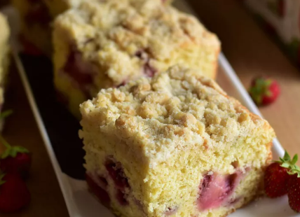

Strawberry Crumb Cake

Description
This dish is easy to throw together and perfect for breakfast, a snack, or after-dinner dessert!
Ingredients
- 3 cups all-purpose flour
- 1 3/4 cup of white sugar
- 1 tablespoon baking powder
- 1/2 teaspoon salt
- 1/2 teaspoon ground nutmeg
- 3/4 cup unsalted butter, cut into 1/2-inch cubes
- 1 cup buttermilk
- 2 large eggs, at room temperature
- 1 tablespoon vanilla extract
- 2 cups hulled and halved straberries
- 3 cups all-purpose flour